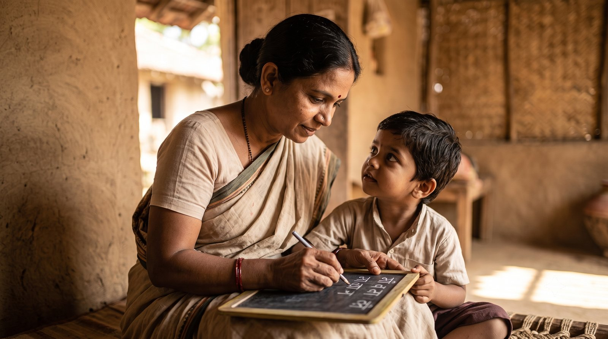

क्या स्त्री सच में पुरुष के बराबर होना चाहती है?
हम बार-बार एक ही बहस में उलझते हैं: स्त्री और पुरुष में श्रेष्ठ कौन है? स्त्री मुक्ति, स्त्री अधिकार, मानव अधिकार, स्वतंत्रता, इन सबके लिए संघर्ष चल रहा है।
आचार्य उपेंद्र जी इस पूरी बहस को एक अलग ही दिशा देते हैं। वे कहते हैं कि स्त्रियाँ पुरुष के बराबर होने के लिए लड़ रही हैं, पर सत्य कुछ और है। किसी भी युग में स्त्रियाँ कभी पुरुष के बराबर नहीं थीं; वे हमेशा उनसे कम से कम हज़ार गुना शक्तिशाली थीं।
जो हज़ार गुना शक्तिशाली है, वह केवल बराबरी के बारे में सोच रही है।
स्त्री को "शक्ति" क्यों कहा गया?
हमारी परंपरा में स्त्री को शक्ति (divine power) कहा गया है। देवी पार्वती शक्ति हैं, लक्ष्मी शक्ति हैं, सरस्वती शक्ति हैं।
फिर भी समाज स्त्री को अबला (बल रहित, the weak one) कहता है, क्योंकि शरीर से वह ऐसी दिखाई नहीं देती। पर यह शक्ति शरीर सौष्ठव या वज़न उठाने की भाषा में नहीं है। यह किसी और स्तर की शक्ति है।
क्या आपने कभी अपनी शक्ति को शरीर के बल से अलग करके देखा है?
माँ की हज़ार गुना शक्ति
स्त्री के ऊपर एक बहुत बड़ा दायित्व है। जब वह किसी पुत्र या पुत्री को जन्म देती है, तब उसके पास उस बच्चे से कम से कम हज़ार गुना अधिक शक्ति होती है।
आचार्य जी गांधारी का उदाहरण देते हैं। जब दुर्योधन छोटा था, झूले में था, विद्यालय में था, तब गांधारी के पास उससे हज़ार गुना शक्ति थी। पर उस शक्ति का उपयोग नहीं हुआ।
यदि बच्चे को लाड़-प्यार में बिगाड़ दिया, समय पर ज्ञान नहीं दिया, और स्वयं राजसिक (रजोगुण से भरे, restless and passionate) और तामसिक (तमोगुण से भरे, inert and ignorant) बने रहे, तो उस बच्चे के पूरे जीवन का पाप भी माँ के ऊपर आ जाता है।

विवाह न किया हो, तब भी?
कोई कह सकती है कि मैंने तो विवाह ही नहीं किया। तब भी वह किसी की बहन है, किसी न किसी संबंध में है। इसलिए स्त्रियों के कर्म (actions and their consequences) बहुत हैं।
आचार्य जी स्पष्ट करते हैं कि स्त्री को पापी कहकर यह नहीं कहा गया है, बल्कि उसके ऊपर उत्तरदायित्व बहुत है।
यह स्त्री पर दोष डालने की बात नहीं है। यह उसकी शक्ति की पहचान है। जहाँ हज़ार गुना शक्ति है, वहीं सबसे बड़ा उत्तरदायित्व भी है।
आपके जीवन में कौन है, जिसे आपकी शक्ति और आपके ज्ञान की आज सबसे अधिक आवश्यकता है?
मुख्य बातें
- स्त्रियाँ कभी पुरुष के बराबर नहीं थीं; वे कम से कम हज़ार गुना शक्तिशाली रही हैं।
- इसीलिए पार्वती, लक्ष्मी और सरस्वती को शक्ति कहा गया है।
- यह शक्ति शरीर के बल की नहीं, किसी गहरे स्तर की है।
- माँ के पास बच्चे से हज़ार गुना शक्ति होती है; गांधारी ने उसका उपयोग नहीं किया।
- लाड़-प्यार में बिगाड़ना, समय पर ज्ञान न देना और स्वयं राजसिक-तामसिक रहना, इसका पाप माँ पर भी आता है।
- विवाह न भी हो, तो भी बहन या किसी संबंध के रूप में स्त्री का उत्तरदायित्व बना रहता है।
- स्त्री को पापी नहीं कहा गया; उस पर उत्तरदायित्व बहुत है।